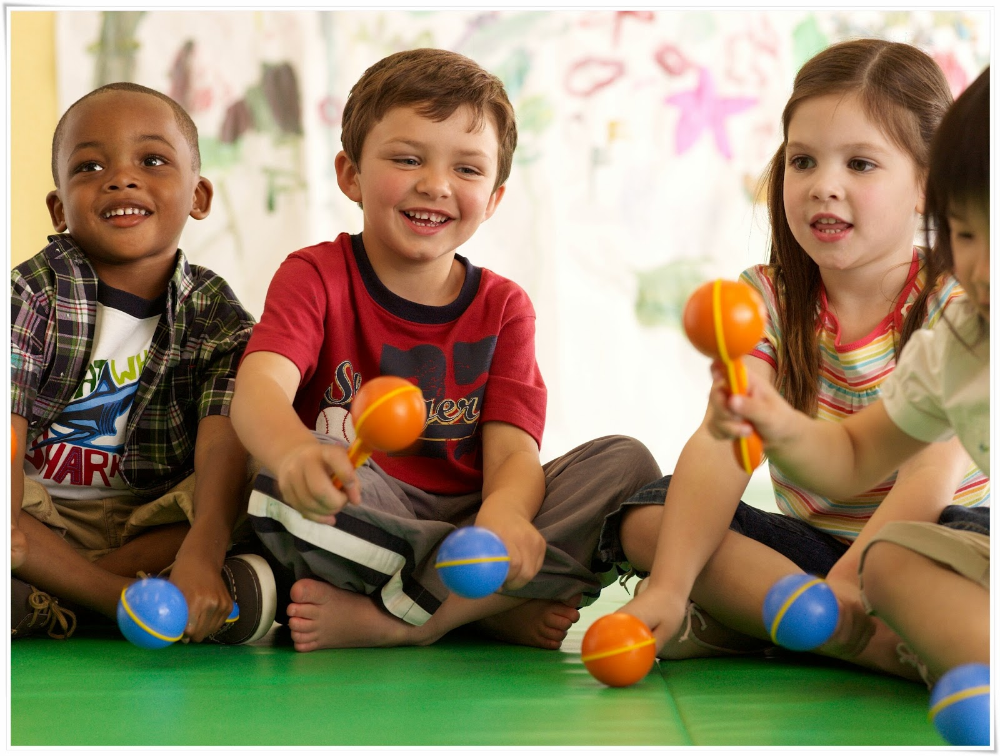
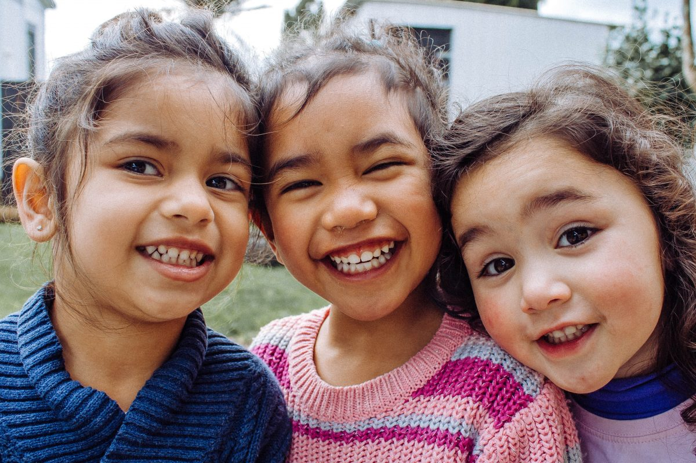
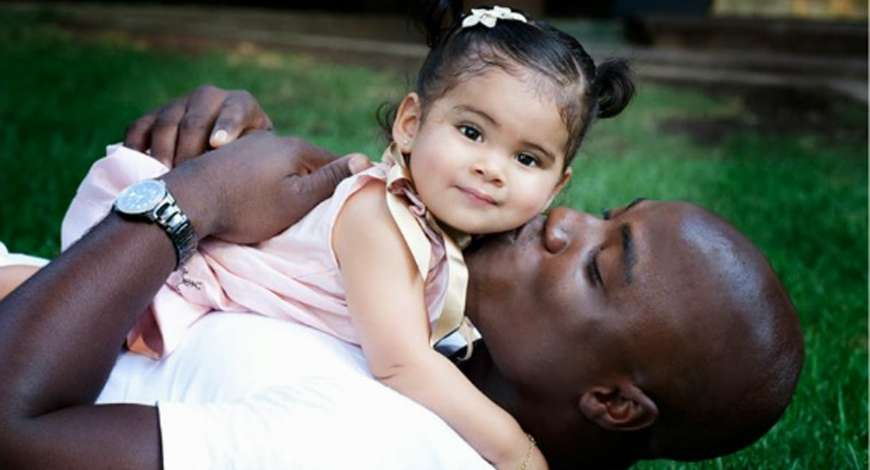
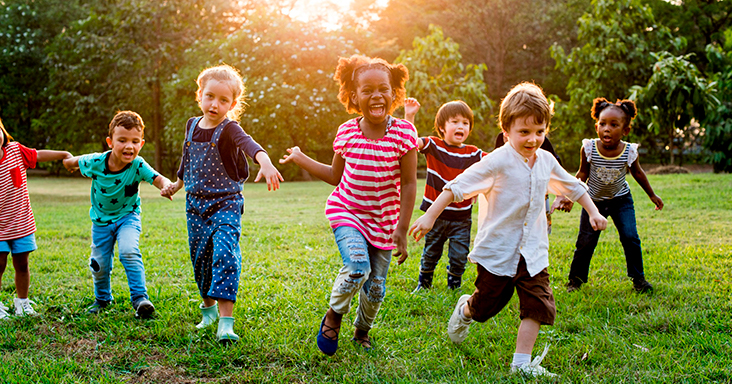

Porque Adotar?
O maior objetivo da adoção é que ela traga benefícios ao desenvolvimento integral das crianças e adolescentes adotados

Qual é o benefício da adoção?
O processo traz segurança jurídica e contribui para a formação do vínculo familiar definitivo. Por todo esse caminho, o processo de adoção legal é o único mecanismo que busca o melhor interesse da criança, garantindo que ela seja tratada como sujeito de direitos e não seja colocada em situação de risco.

È bom ter um filho?
Uma coisa fica clara, a adoção é uma forma de você ter um filho, reconhecida por lei, sem diferença alguma com os filhos biológicos.

O que é adoção tardia?
termo adoção tardia é utilizado quando a criança adotada já possui um desenvolvimento parcial em relação a sua autonomia e interação com o mundo, em geral após os 3 anos de idade.

Adote qualquer idade que seu coração mandar!
Adoção é amor, faça sua parte!